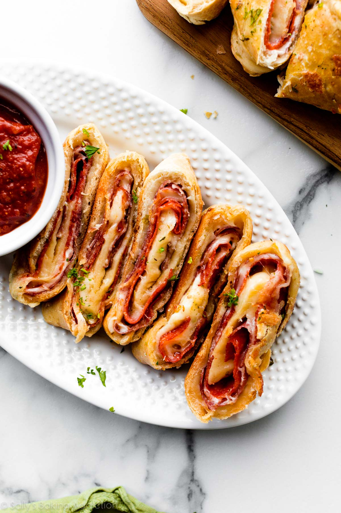

Stromboli

Click Here to return to the cookbook.
Description:
Stromboli is a type of turnover filled with various Italian cheeses (typically mozzarella) and usually Italian cold cuts
(typically Italian meats such as salami, capocollo and bresaola) or vegetables. The dough used is either Italian bread
dough or pizza dough. Stromboli was invented by Italian-Americans in the United States in suburban Philadelphia.[1] The
name of the dish is taken from the 1950 film Stromboli, which in turn is named after a volcanic island off the coast of Sicily.
A stromboli is similar to a calzone, and the two are sometimes confused. Unlike calzones, which are always stuffed and folded into
a crescent shape, a stromboli is typically rolled or folded into a cylinder, and may sometimes contain a thin layer of tomato sauce
on the inside.
Ingredients:
Homemade Dough for 2:
- 1 and 1/3 cups (320ml) warm water (between 100-110°F, 38-43°C)
- 2 and 1/4 teaspoons instant or active-dry yeast (1 standard packet)
- 1 Tablespoon (13g) granulated sugar
- 2 Tablespoons (30ml) olive oil
- 3/4 teaspoon salt
- 3 and 1/2 cups (438g) all-purpose flour (spoon & leveled), plus more for hands and work surface
Fillings for 2:
- 3 Tablespoons (43g) unsalted butter, melted
- 2 garlic cloves, minced (or 1/2 teaspoon garlic powder)
- 2 teaspoons chopped fresh parsley (or 1 teaspoon dried)
- 1 pound thinly sliced meats such as Italian cold cuts, deli ham, or large pepperoni slices
- 3/4 – 1 pound cheese (about 3 cups shredded or about 16-20 slices deli cheese
Egg Wash & Topping for 2:
- egg wash: 1 large egg beaten with 1 Tablespoon water
- optional: a light sprinkle of chopped fresh or dried parsley, flaky/coarse sea salt, ground pepper, Italian seasoning, and/or grated or shredded parmesan cheese
Instructions:
- Whisk the warm water, yeast, and granulated sugar together in the bowl of your stand mixer fitted with a dough hook or paddle attachment. Cover and allow to rest for 5 minutes. If you don’t have a stand mixer, simply use a large mixing bowl and mix the dough with a wooden spoon or rubber spatula in the next step.
- Add the olive oil, salt, and flour. Beat on low speed for 2 minutes. Turn the dough out onto a lightly floured surface. With lightly floured hands, knead the dough for 3-4 minutes (for a visual, watch me do it in the video above!). The dough can be a little too heavy for a mixer to knead it, but you can certainly use the mixer on low speed instead. After kneading, the dough should still feel a little soft. Poke it with your finger – if it slowly bounces back, your dough is ready to rise. If not, keep kneading.
- Lightly grease a large bowl with oil or nonstick spray– just use the same bowl you used for the dough. Place the dough in the bowl, turning it to coat all sides in the oil. Cover the bowl with aluminum foil, plastic wrap, or a clean kitchen towel. Allow the dough to rise at room temperature for 60-90 minutes or until double in size. If using instant yeast, this takes about 1 hour. (Tip: For the warm environment on a particularly cold day, heat your oven to 150°F (66°C). Turn the oven off, place the dough inside, and keep the door slightly ajar. This will be a warm environment for your dough to rise. After about 30 minutes, close the oven door to trap the air inside with the rising dough. When it’s doubled in size, remove from the oven.)
- Preheat oven to 400°F (204°). Line 2 large baking sheets with parchment paper or silicone baking mats.
- Shape the dough: When the dough is ready, punch it down to release the air. Divide in half. (If you aren’t making 2 strombolis, freeze the other half of dough. See freezing instructions below.) On a lightly floured work surface using a lightly floured rolling pin, roll each half of dough into a 10×16 inch rectangle. I like to use my hands to square off the edges, as shown in the video above. If the dough keeps shrinking as you try to shape it, cover it lightly and let the dough rest for 10 minutes before trying again. (The gluten just needs to settle.)
- Add fillings: Mix melted butter and garlic together. Spread all over each rectangle. Sprinkle each with parsley. When you start layering on meats and cheeses, leave a 1 inch border on the bottom and sides and a 3 inch border on top. (Basically you’ll have an empty 3×16 inch gap on top that only has butter/garlic on it. This is because when rolling, the fillings will be pushed forward. See photos and video above if you need a visual.) Arrange a layer sliced meats onto each dough, usually about 8-10 slices on each depending on size and thickness of slices. Add a layer of cheese. Repeat with more meat and cheese until all is used– about 1/2 pound meat and 1/2 pound cheese per stromboli. Brush all edges with egg wash, including 3 inch gap at the top. This helps the stromboli hold its rolled shape. Slowly roll each into a tight 16 inch log, folding in the two ends as you roll. See me do this in the video above. Dust your hands or the dough with flour if things become too sticky. Carefully transfer each to lined baking sheets. Pinch or tuck in ends to seal if they became unfolded.
- Brush each stromboli with egg wash and, if desired, optional toppings. Using a very sharp knife, cut 3-4 slits into the tops of each, which helps steam escape. At this point, you can cover shaped stromboli tightly and refrigerate for up to 8 hours.
- Bake for about 25 minutes or until crust is golden brown– if you have an instant read thermometer, the center of the stromboli should be at least 200ºF (93ºC). If meats are particularly greasy (like pepperoni), some grease will spill out the sides. Cheese may bubble out the sides or top slits, too. If baking both at the same time, rotate pans halfway through baking and extend bake time (if needed) by 2-3 minutes. Remove from the oven and cool on baking sheets for 5 minutes before transferring to a cutting board and slicing.
- Serve plain or with pizza/marinara sauce for dipping.
- Cover and store leftover stromboli (slices or whole) in the refrigerator for up to 1 week.
Click Here to return to the cookbook.